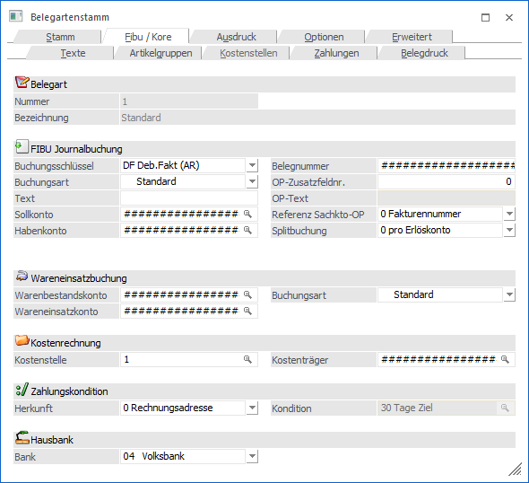
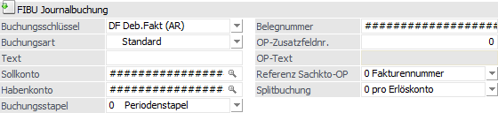
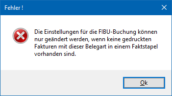
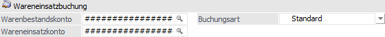
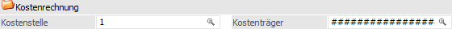
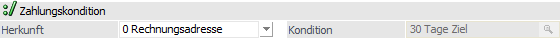
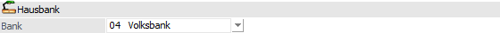

In dem Register "Fibu / Kore" werden die Einstellungen für die Buchung von Belegen und für die Vorbesetzung der Kostenrechnung im Beleg vorgenommen.

Im oberen Teil des Fensters wird die Belegart angezeigt, welche gerade bearbeitet wird (Felder "Nummer" und "Bezeichnung").
Wird in der Belegmitte ein Sachkonto mit einer Kostenart, welche den Verteilungsschlüssel im Bereich "Werte" (Kostenartenstamm im Programm KORE) geschlüsselt hat verwendet, dann wird diese Aufteilung für die Kostenrechnung mit im Buchungsstapel berücksichtigt. Welche Aufteilung verwendet wird, ergibt sich aus dem Belegdatum.
Hinweis:
Ist in der Belegart eine Kostenstelle hinterlegt, so wird diese in einem solchen Fall nicht herangezogen, sondern die Verteilung.
FIBU Journalbuchung

Ø Buchungsschlüssel
Für den integrierten Einsatz der WinLine FIBU kann der Buchungsschlüssel gewählt werden.
ü DF - Deb.Faktura (AR)
Dieser
Buchungsschlüssel wird für Ausgangsrechnungen gewählt.
ü KF - Kred.Fakt (ER)
Dieser
Buchungsschlüssel wird für Eingangsrechnungen gewählt.
ü B - Buchen S/H
Dieser
Buchungsschlüssel wird für Barverkäufe gewählt, d.h. es werden keine ohne
OP-Information gebildet.
ü 0 - Keine Buchung
Es wird keine
Buchung für die WinLine FIBU erzeugt.
ü -1 - nur
Wareneinsatzbuchung
Wird dieser Buchungsschlüssel gewählt, so wird nur die
Wareneinsatzbuchung an die WinLine FIBU übergeben. Hierbei muss ein
Warenbestands- und ein Wareneinsatzkonto angegeben werden, sofern dieses nicht
im Artikelstamm definiert wurde.
Hinweis
Ein Buchungsschlüssel (z.B. KF, DF, etc.) kann nur dann auf "0 - keine Buchung" oder "-1 - nur Wareneinsatzbuchung" und umgekehrt umgestellt werden, wenn kein FAKT-Stapel (-1 bis -12) vorhanden ist, der eine Rechnung mit dieser Belegart enthält. Ist das der Fall, wird eine entsprechende Meldung ausgegeben.

Ø Buchungsart
An dieser Stelle kann die gewünschte Buchungsart angegeben werden, die bei der Bildung des Buchungssatzes verwendet werden soll. An die WinLine FIBU wird "nur" die Buchungsart übergeben, es werden jedoch keine Einstellungen wie Datum, Nummernkreis usw. aus der Buchungsart verwendet.
In der Auswahlliste stehen alle angelegten Buchungsarten zur Verfügung, welche die Buchungsschlüssel "B", "DF" oder "KF" zugewiesen haben. Die Standardvorbelegung lautet "Standard". Wird ein anderer Eintrag ausgewählt, so erfolgt, wie beim Ändern des Buchungsschlüssels, eine Prüfung ob es bereits gedruckte Fakturen mit diesem Buchungsschlüssel in einem Fakt-Stapel gibt. Ist die Umstellung erfolgreich, so wird das Feld "Buchungsschlüssel" auf jenen Schlüssel der ausgewählten Buchungsart gestellt und fixiert (d.h. Eintrag kann nicht geändert werden).
Bei den Buchungsschlüsseln "0 - keine Buchung" und "-1 - nur Wareneinsatzbuchung" kann keine Buchungsart ausgewählt werden.
Ø Text
Bleibt dieses Feld leer, wird der Text F/G + jeweilige Belegnummer als Buchungstext sowie als OP-Text in die FIBU übernommen.
Hinweis 1
Der OP-Text und der Buchungstext, die im Belegerfassen eingegeben werden können und in die Stapeltabellen in die Spalten T331.C006 und T339.C018 geschrieben werden, werden standardmäßig mit "F/G" + Rechnungsnummer belegt.
Diese Texte sind überall (T025, T331, T339) mit 50 Stellen definiert. Wenn also alle 50 Stellen bei der Rechnungsnummer verwendet werden, wird die Rechnungsnummer in den Text nur mit 46 Stellen geschrieben, da der Rest für "F/G" benötigt wird.
Hinweis 2
Durch die Hinterlegung von #NAM wird der Debitorenname in den Text (Buchungs-, sowie OP-Text) übernommen.
Ø Sollkonto
Wenn das Debitorenkonto, welches in den Stammdaten eingetragen ist, nicht bebucht werden soll, müssen Sie hier das Sollkonto eingeben.
Beispiel
Barfaktura - Sollkonto = Kassenkonto
Es können auch Teile des Kontos übersteuert werden, indem die # an der gewünschten Stelle ersetzt werden.
Ø Habenkonto
Wenn Sie für eine bestimmte Belegart ein anderes Habenkonto, als das, das im Artikelstamm eingetragen ist, bebuchen wollen, müssen Sie die Vorbesetzung ####### verändern. Sie können Teile der Vorbesetzung überschreiben und so ein anderes Erlöskonto verwenden.
Ø Buchungsstapel
An dieser Stelle kann definiert werden, in welchen Buchungsstapel der Beleg übergeben werden soll. Hierfür werden über eine Auswahlliste alle selbst definierten FAKT-Stapel angeboten, wobei auch der Eintrag "Periodenstapel" (Standard) zur Verfügung steht. Bei dessen Verwendung werden die Fakturen in den jeweiligen Buchungsübernahme-Stapel -1 bis -12 übergeben.
Hinweis
Der hinterlegte Buchungsstapel wird in der Belegerfassung von Fakturen bei Auswahl der Belegart vorgeschlagen und kann bei neuen Belegen editiert werden.
Achtung
Die Einstellung steht nur zur Verfügung, wenn die Option "Abweichende Faktstapel verwenden" in den FAKT-Parameter aktiviert wurde. Zusätzlich muss zumindest ein FAKT-Stapel im Programm "Buchungen speichern" (WinLine FIBU) angelegt worden sein.
Des Weiteren wird die Funktion bei Barfakturenbelegarten nicht unterstützt.
Ø Belegnummer
Wenn Sie die Vorbesetzung #################### unverändert lassen, werden die Fakturennummern als Belegnummer bei FIBU-Buchungen übernommen. Sie können die Fakturennummern auch teilweise verändern, indem Sie den entsprechenden Abschnitt der Vorbesetzung #################### überschreiben.
Beispiel
Ein Belegkreis soll am Ende der Fakturennummer das Kennzeichen B (= Barzahlung) haben. Die Fa.Nr. ist 4stellig. Tragen Sie folgendes ein: ####B.
Achtung
Achten Sie darauf, dass genügend # in diesem Feld eingetragen sind. Tragen Sie z.B. nur 5 # ein, so werden auch nur die ersten 5 Stellen der Fakturennummer in die Finanzbuchhaltung übergeben.
Bei der Verwendung von bis zu 50 Zeichen für die Belegnummer, müssen ggf. die Rauten erweitert werden.
Ø OP-Text / OP-Zusatzfeldnummer
Wenn im Feld OP-Zusatzfeldnummer ein Zusatzfeld eingetragen ist, wird dessen Inhalt als OP-Text in die Finanzbuchhaltung übernommen. Zusätzlich kann noch ein fixer OP-Text vorangestellt werden (Feld OP-Text). Dieser OP-Text kann beim Erfassen des Beleges im Register Zusatz noch übersteuert werden.
Ø Referenz Sachkto-OP
Wird in der WinLine FIBU mit Sachkonten-OPs gearbeitet kann hier festgelegt werden, unter welcher Referenznummer die Sachkonten-OPs geführt werden sollen. Standardmäßig ist es eingestellt auf 0 - Fakturennummer. Als zweite Option steht 1 - Projektnummer zur Verfügung. D.h., dass die Sachkonten-OPs unter der Projektnummer geführt werden, die im Beleg (Belegkopf) hinterlegt sind.
Ø Splitbuchung
Aus der Auswahllistbox kann gewählt werden, bei welchen Artikelzeilen in der Belegmitte Splitbuchungen erzeugt werden sollen:
ü 0 - pro Erlöskonto
Bei
Verwendung dieser Einstellung wird eine Splitzeile bzw. Splitbuchung pro
Erlöskonto und Steuerzeile erzeugt.
ü 1 - pro Hauptartikel
Mit dieser
Option wird eine Splitzeile bzw. Splitbuchung pro "Hauptartikelzeile" erzeugt.
D.h. handelt es sich beim Artikel um einen "aufgeteilten Hauptartikel", so wird
pro Hauptartikelzeile eine Splitbuchung erzeugt. Ebenso verhält es sich bei
Artikeln OHNE Ausprägungsinformationen; für diese wird gleichfalls eine
Splitzeile erzeugt.
Ist in einer Belegmittelteilszeile keine Hauptartikelzeile vorhanden (da die Ausprägungen z.B. über den Artikelmatchcode eingegeben wurden) dann wird trotzdem auf Hauptartikel "komprimiert".
Achtung
Wenn eine Artikelzeile mehrfach in der Belegmitte erfasst wurde, so werden dafür auch eigene Splitzeilen erzeugt.
Wareneinsatzbuchung

Ø Warenbestandskonto / Wareneinsatzkonto
Tragen Sie das Warenbestands- und Wareneinsatzkonto für eine automatische Verbuchung des Wareneinsatzes ein (Summe der Einstandspreise pro Konto). Im Artikelstamm im Register "Lager" kann unter Bestandbuchung eingestellt werden, ob für einen Artikel eine Bestandsbuchung durchgeführt werden soll oder nicht.
Hinweis
Sollen Warenbestand- bzw. Wareneinsatzkonten hinzugefügt oder gelöscht werden, dann ist das nur dann möglich, wenn kein FAKT-Stapel (-1 bis -12) vorhanden ist, der eine Rechnung mit dieser Belegart enthält. Ist das der Fall, wird eine entsprechende Meldung ausgegeben.
Die über die Belegart auslösbare Bestands/Wareneinsatzbuchung wird sowohl für Verkaufs-, als auch für Einkaufsbelegarten unterstützt und kann vorhandene Kostenrechnungsinformationen an die WinLine FIBU übergeben.
Ø Buchungsart
Zur Übergabe der Wareneinsatzbuchungen kann hier eine Buchungsart angegeben werden. In der Auswahllistbox stehen alle angelegten Buchungsarten zur Verfügung, die den Buchungsschlüssel "B" zugewiesen haben. Als Standardvorbelegung ist der Eintrag "Standard" gewählt.
Kostenrechnung

Ø Kostenstelle / Kostenträger
An dieser Stelle besteht die Möglichkeit eine Kostenstelle / einen Kostenträger, zur direkten Kostenerfassung im Beleg, zu hinterlegen.
Achtung
Die Maskierung (####) wird beim Feld "Kostenstelle" nicht unterstützt. Bleibt das Feld "Kostenstelle" leer und beim Sachkonto ist eine Kostenstelle hinterlegt, so wird diese in der Belegmitte verwendet. Beim Kostenträger kann die Maskierung verwendet werden. Dabei wird im Belegkopf der Kostenträger aus dem Personenkontenstamm herangezogen.
Beispiele zur WinLine KORE-Übergabe
ü Im Fall, dass beide Konten eine Kostenart hinterlegt haben, wird keine Kostenrechnungszeile in den FAKT-Buchungsstapel geschrieben.
ü Hat kein Konto eine Kostenart hinterlegt, wird ebenso keine Kostenrechnungszeile erstellt.
ü Hat eines der beiden Konten eine Kostenart hinterlegt, so wird aus der jeweiligen Positionierung (Soll/Haben) und Art des Kontos bzw. der Kostenart (Kosten/Erlöse) entweder ein positiver oder ein negativer Aufwand an den (FAKT-)Buchungsstapel übergeben.
Zahlungskondition

Ø Herkunft / Kondition
Pro Belegart (z.B. Geschäftsfall) kann über die Belegart entschieden werden, von welchem Konto (Rechnungs-, oder Lieferanschrift) die Zahlungskondition verwendet wird bzw. ob eine Zahlungskondition verwendet werden soll, die in der Belegart hinterlegt wird.
ü 0 - Rechnungsadresse
Die
Zahlungskondition, die im Konto der Rechnungsadresse im Register "FAKT"
hinterlegt ist, wird beim Erfassen eines Beleges verwendet (bzw. vorbelegt, und
kann z.B. im Belegerfassen manuell editiert werden).
ü 1 - Lieferadresse
Die
Zahlungskondition, die im Konto der Lieferadresse im Register "FAKT" hinterlegt
ist, wird beim Erfassen eines Beleges verwendet (bzw. vorbelegt, und kann z.B.
im Belegerfassen manuell editiert werden).
ü 2 - Fixe Zahlungskondition
Wird
der Radiobutton auf diese Einstellung gesetzt, so kann im Eingabefeld eine
Zahlungskondition eingetragen werden, die weder aus dem Rechnungsempfängerkonto,
noch aus der Lieferadresse kommen muss. Dafür steht die Matchcode-Funktion (F9),
mit der nach allen angelegten Zahlungskonditionen gesucht werden kann, oder die
Autovervollständigung zur Auswahl. Dabei stehen alle Zahlungskonditionen zur
Verfügung.
ü 3 - Zusatzadresse
Bei
Verwendung der Einstellung "Zusatzadresse" wird in der Belegerfassung mit
Eingabe einer Zusatzadresse die Zahlungskondition von der Zusatzadresse
verwendet. Wird keine Zusatzadresse erfasst, findet weiterhin die
Zahlungskondition der Hauptadresse Verwendung.
Hausbank

Ø Bank
An dieser Stelle besteht die Möglichkeit eine Hausbank zu hinterlegen, welche entsprechend in der Belegerfassung vorbelegt und im Register "Zusatz" nachträglich übersteuert werden kann. In weiterer Folge können die zugehörigen Bankdaten auch im Formular angedruckt werden. Die Anlage der Hausbanken kann im Bankenstamm in der Applikation FIBU vorgenommen werden.